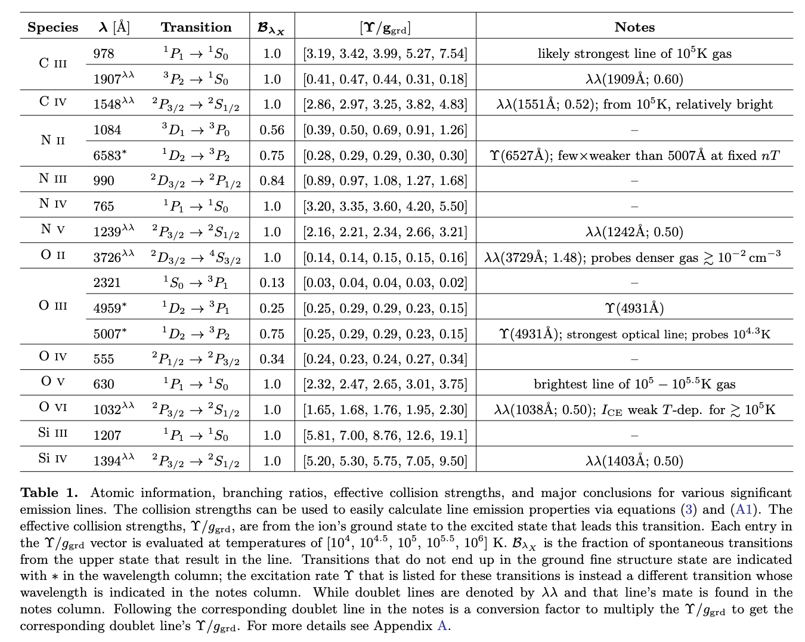

Daniel R. Piacitelli
piacitelli.danielr@gmail.com

**put rutgers research here**
The aim of this project was to identify the most promising visible/ultraviolet spectral lines with which to observe the circumgalactic medium (CGM). Utilizing the spectral synthesis code, Cloudy (cite), along with the atomic database Chianti, (cite), I was able to create this table that contains the various values needed to calculate the intensity in a given spectral line. This table serves as both a listing of lines we studied in this project and a database to help inform future CGM emission studies.
With this data, I was able to test different conditions by assuming various density scaling (isobaric vs isochoric) and gas physics (mixing vs cooling). This provided 4 models to test the intensity profiles of the CGM, shown below.

Ultimately, we concluded
Piacitelli, D., Solhaug, E., Faerman, Y., & Mcquinn, M. “Absorption-based Circumgalactic Medium Line Emission Estimates” (submitted to MNRAS) 2022
edit this --> I utilized novel synthetic spectroscopy techniques to determine column densities and velocity distributions of various ions within the Patient0 galaxy simulation and a second Patient0 iteration with CR physics implemented. Extracting this data using Python-based, observer-developed Voigt profile fitting tools (linetools, pyigm, veeper), I was able to directly compare spectral line properties in our simulation to observations in the COS-Halos survey—these contributions to the project resulted in my co-authorship on the publication. Ultimately, we found the im- plementation of CR physics produced simulated O vi and Si iii absorption feature widths in better agreement with observations.
Butsky, I., Werk, J., Tchernyshyov, K., Fielding, D., Breneman, J., Piacitelli, D., Quinn, T., Sanchez, N., Cruz, A., Hummels, C., et al., “The Impact of Cosmic Rays on the Kinematics of the Circumgalactic Medium,” (submitted to ApJ) 2021
I am interested in researching how to use simulations to better understand the circumgalactic medium and the processes that drive the galactic baryon cycle. I received my B.S. in Astronomy and Physics, with a minor in Applied Mathematics from the University of Washington in 2022. Currently, I am a graduate student at Rutgers University studying synthetic observations with Professor Alyson Brooks. My long term goals are to become an astronomy professor researching extragalactic astronomy and prioritizing inclusive STEM education.
Outside of research, I am passionate about Diversity, Equity, and Inclusion (D.E.I) efforts. At the University of Washington (UW), I volunteered as an Undergraduate Research Leader and worked to motivate my peers across disciplines to participate in research, along with helping facilitate the UW Undergraduate Research Symposium. I also lead the Physical Sciences Curriculum team within Synbio for Everyone—a UW-student organization aiming to improve accessibility and reduce equity gaps in STEM education. Moving forward, I hope to incorporate D.E.I work in each stage of my academic journey.
Personally, i like hikes and cats